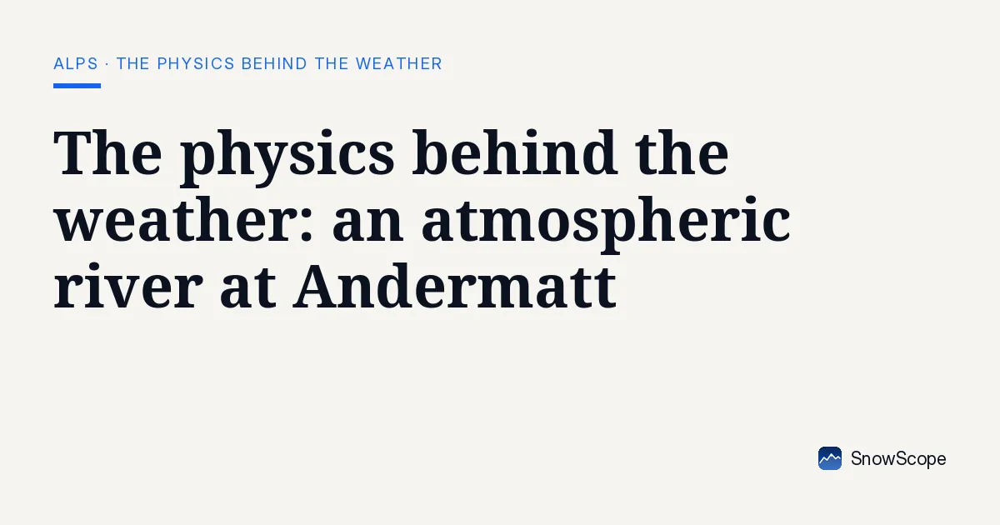

The physics behind the weather: an atmospheric river at Andermatt
At Andermatt (2963 m) the forecast gives 75 mm of precipitation from 15 November to 20 November. During the wet hours the 0 °C level stands near 2160 m, so the snow line is near 1860 m.
See the live snow forecast for Andermatt in the SnowScope appSnow depth, powder alerts and the 3D map, free.
What the forecast shows
At Andermatt (2963 m) the forecast gives 75 mm of precipitation from 15 November to 20 November. During the wet hours the 0 °C level stands near 2160 m, so the snow line is near 1860 m.

The physics
An atmospheric river is a long, narrow band of air that carries a lot of water vapour. Above 250 kg of water per metre per second it counts as an atmospheric river, above 750 as a strong one. When it meets a mountain range the air must rise and cool, the vapour condenses and the slopes facing the wind get the heaviest rain and snow.


What it means for you
- Forecasts change: check the snow map again before you go.
- Off-piste: always read the official avalanche bulletin.
References and credits
- Ralph, F. M., Dettinger, M. D., Cairns, M. M., Galarneau, T. J. and Eylander, J. (2018). Defining 'atmospheric river': how the Glossary of Meteorology helped resolve a debate. Bulletin of the American Meteorological Society 99, 837-839. doi.org/10.1175/BAMS-D-17-0157.1
- Ralph, F. M., Rutz, J. J., Cordeira, J. M., Dettinger, M. D. et al. (2019). A scale to characterize the strength and impacts of atmospheric rivers. Bulletin of the American Meteorological Society 100, 269-289. doi.org/10.1175/BAMS-D-18-0023.1
- American Meteorological Society, Glossary of Meteorology: 'Atmospheric river'. glossary.ametsoc.org/wiki/Atmospheric_river
- Roe, G. H. (2005). Orographic precipitation. Annual Review of Earth and Planetary Sciences 33, 645-671. doi.org/10.1146/annurev.earth.33.092203.122541
- Minder, J. R., Durran, D. R. and Roe, G. H. (2011). Mesoscale controls on the mountainside snow line. Journal of the Atmospheric Sciences 68, 2107-2127. doi.org/10.1175/JAS-D-10-05006.1
- Wallace, J. M. and Hobbs, P. V. (2006). Atmospheric Science: An Introductory Survey, 2nd edition. Academic Press / Elsevier. ISBN 978-0-12-732951-2.
- Forecast data: Open-Meteo.com (CC BY 4.0), from the ECMWF IFS (CC BY 4.0), DWD ICON and NOAA GFS models; snow depth: SnowScope snow model. open-meteo.com/
About these numbers
Numbers from the forecast of 15 November: precipitation, temperature and wind at several heights at the places named. The 0 °C level is computed from the temperature profile; the snow line is taken about 300 m below it. Forecasts change.
Cite this report
For research, teaching or the press: the numbers and charts are free to reuse under CC BY 4.0 with this citation.
SnowScope (2026), The physics behind the weather: an atmospheric river at Andermatt, https://snowscope.app/blog/en/2026/11/alps-physics-an-atmospheric-river-15-november-2026.html, accessed 2026-11-15
SnowScope (Atlas Labs). (2026, November 15). The physics behind the weather: an atmospheric river at Andermatt. SnowScope snow reports. https://snowscope.app/blog/en/2026/11/alps-physics-an-atmospheric-river-15-november-2026.html
BibTeX
@misc{snowscope2026alpsphysicsanatmospheric,
author = {{SnowScope (Atlas Labs)}},
title = {The physics behind the weather: an atmospheric river at Andermatt},
year = {2026},
month = nov,
howpublished = {\url{https://snowscope.app/blog/en/2026/11/alps-physics-an-atmospheric-river-15-november-2026.html}},
note = {Published 2026-11-15 17:57 UTC; accessed 2026-11-15}
}· CC BY 4.0 · Methods, data and tools →
Follow Andermatt
Free: a message when fresh snow is coming, and the forecast every morning.
More snow reports

Davos and Klosters share six ski mountains. A day-by-day plan, starting on Parsenn, with what 46 past winters of our snow history say about its heights.

When to book Courchevel and the 3 Vallées, which village to stay in and where the snow lasts, planned from 46 past winters of snow data.

Cortina d'Ampezzo three ways: Tofana, Faloria-Cristallo and Cinque Torri-Lagazuoi, with 46 winters of snow data at three heights.